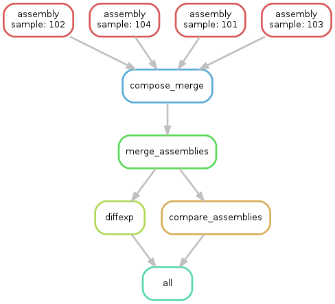
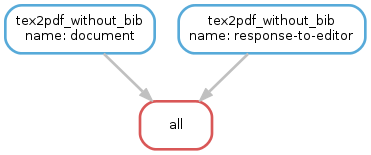

Examples¶
Most of the examples below assume that Snakemake is executed in a project-specific root directory.
The paths in the Snakefiles below are relative to this directory.
We follow the convention to use different subdirectories for different intermediate results, e.g., mapped/ for mapped sequence reads in .bam files, etc.
Cufflinks¶
Cufflinks is a tool to assemble transcripts, calculate abundance and conduct a differential expression analysis on RNA-Seq data. This example shows how to create a typical Cufflinks workflow with Snakemake. It assumes that mapped RNA-Seq data for four samples 101-104 is given as bam files.
- For each sample, transcripts are assembled with
cufflinks(ruleassembly). - Assemblies are merged into one gtf with
cuffmerge(rulemerge_assemblies). - A comparison to the hg19 gtf-track is conducted (rule
compare_assemblies). - Finally, differential expressions are calculated on the found transcripts (rule
diffexp).
# path to track and reference
TRACK = 'hg19.gtf'
REF = 'hg19.fa'
# sample names and classes
CLASS1 = '101 102'.split()
CLASS2 = '103 104'.split()
SAMPLES = CLASS1 + CLASS2
# path to bam files
CLASS1_BAM = expand('mapped/{sample}.bam', sample=CLASS1)
CLASS2_BAM = expand('mapped/{sample}.bam', sample=CLASS2)
rule all:
input:
'diffexp/isoform_exp.diff',
'assembly/comparison'
rule assembly:
input:
'mapped/{sample}.bam'
output:
'assembly/{sample}/transcripts.gtf',
dir='assembly/{sample}'
threads: 4
shell:
'cufflinks --num-threads {threads} -o {output.dir} '
'--frag-bias-correct {REF} {input}'
rule compose_merge:
input:
expand('assembly/{sample}/transcripts.gtf', sample=SAMPLES)
output:
txt='assembly/assemblies.txt'
run:
with open(output.txt, 'w') as out:
print(*input, sep="\n", file=out)
rule merge_assemblies:
input:
'assembly/assemblies.txt'
output:
'assembly/merged/merged.gtf', dir='assembly/merged'
shell:
'cuffmerge -o {output.dir} -s {REF} {input}'
rule compare_assemblies:
input:
'assembly/merged/merged.gtf'
output:
'assembly/comparison/all.stats',
dir='assembly/comparison'
shell:
'cuffcompare -o {output.dir}all -s {REF} -r {TRACK} {input}'
rule diffexp:
input:
class1=CLASS1_BAM,
class2=CLASS2_BAM,
gtf='assembly/merged/merged.gtf'
output:
'diffexp/gene_exp.diff', 'diffexp/isoform_exp.diff'
params:
class1=",".join(CLASS1_BAM),
class2=",".join(CLASS2_BAM)
threads: 8
shell:
'cuffdiff --num-threads {threads} {gtf} {params.class1} {params.class2}'
The execution plan of Snakemake for this workflow can be visualized with the following DAG.
Building a C Program¶
GNU Make is primarily used to build C/C++ code. Snakemake can do the same, while providing a superior readability due to less obscure variables inside the rules.
The following example Makefile was adapted from http://www.cs.colby.edu/maxwell/courses/tutorials/maketutor/.
IDIR=../include
ODIR=obj
LDIR=../lib
LIBS=-lm
CC=gcc
CFLAGS=-I$(IDIR)
_HEADERS = hello.h
HEADERS = $(patsubst %,$(IDIR)/%,$(_HEADERS))
_OBJS = hello.o hellofunc.o
OBJS = $(patsubst %,$(ODIR)/%,$(_OBJS))
# build the executable from the object files
hello: $(OBJS)
$(CC) -o $@ $^ $(CFLAGS)
# compile a single .c file to an .o file
$(ODIR)/%.o: %.c $(HEADERS)
$(CC) -c -o $@ $< $(CFLAGS)
# clean up temporary files
.PHONY: clean
clean:
rm -f $(ODIR)/*.o *~ core $(IDIR)/*~
A Snakefile can be easily written as
from os.path import join
IDIR = '../include'
ODIR = 'obj'
LDIR = '../lib'
LIBS = '-lm'
CC = 'gcc'
CFLAGS = '-I' + IDIR
_HEADERS = ['hello.h']
HEADERS = [join(IDIR, hfile) for hfile in _HEADERS]
_OBJS = ['hello.o', 'hellofunc.o']
OBJS = [join(ODIR, ofile) for ofile in _OBJS]
rule hello:
"""build the executable from the object files"""
output:
'hello'
input:
OBJS
shell:
"{CC} -o {output} {input} {CFLAGS} {LIBS}"
rule c_to_o:
"""compile a single .c file to an .o file"""
output:
temp('{ODIR}/{name}.o')
input:
src='{name}.c',
headers=HEADERS
shell:
"{CC} -c -o {output} {input.src} {CFLAGS}"
rule clean:
"""clean up temporary files"""
shell:
"rm -f *~ core {IDIR}/*~"
As can be seen, the shell calls become more readable, e.g. "{CC} -c -o {output} {input} {CFLAGS}" instead of $(CC) -c -o $@ $< $(CFLAGS). Further, Snakemake automatically deletes .o-files when they are not needed anymore since they are marked as temp.

Building a Paper with LaTeX¶
Building a scientific paper can be automated by Snakemake as well. Apart from compiling LaTeX code and invoking BibTeX, we provide a special rule to zip the needed files for online submission.
We first provide a Snakefile tex.rules that contains rules that can be shared for any latex build task:
ruleorder: tex2pdf_with_bib > tex2pdf_without_bib
rule tex2pdf_with_bib:
input:
'{name}.tex',
'{name}.bib'
output:
'{name}.pdf'
shell:
"""
pdflatex {wildcards.name}
bibtex {wildcards.name}
pdflatex {wildcards.name}
pdflatex {wildcards.name}
"""
rule tex2pdf_without_bib:
input:
'{name}.tex'
output:
'{name}.pdf'
shell:
"""
pdflatex {wildcards.name}
pdflatex {wildcards.name}
"""
rule texclean:
shell:
"rm -f *.log *.aux *.bbl *.blg *.synctex.gz"
Note how we distinguish between a .tex file with and without a corresponding .bib with the same name.
Assuming that both paper.tex and paper.bib exist, an ambiguity arises: Both rules are, in principle, applicable.
This would lead to an AmbiguousRuleException, but since we have specified an explicit rule order in the file, it is clear that in this case the rule tex2pdf_with_bib is to be preferred.
If the paper.bib file does not exist, that rule is not even applicable, and the only option is to execute rule tex2pdf_without_bib.
Assuming that the above file is saved as tex.rules, the actual documents are then built from a specific Snakefile that includes these common rules:
DOCUMENTS = ['document', 'response-to-editor']
TEXS = [doc+".tex" for doc in DOCUMENTS]
PDFS = [doc+".pdf" for doc in DOCUMENTS]
FIGURES = ['fig1.pdf']
include:
'tex.smrules'
rule all:
input:
PDFS
rule zipit:
output:
'upload.zip'
input:
TEXS, FIGURES, PDFS
shell:
'zip -T {output} {input}'
rule pdfclean:
shell:
"rm -f {PDFS}"
Hence the user can perform 4 different tasks. Build all PDFs:
$ snakemake
Create a zip-file for online submissions:
$ snakemake zipit
Clean up all PDFs:
$ snakemake pdfclean
Clean up latex temporary files:
$ snakemake texclean
The following DAG of jobs would be executed upon a full run:
